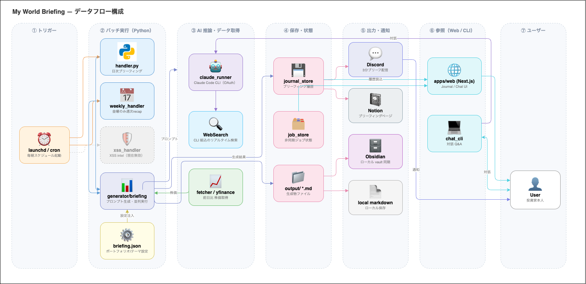

仕組み
このページは、リポジトリの構造と設計の考え方を知りたい人向けです。使い方だけを知りたい場合は読まなくて構いません。
コンセプト
一般のニュースや市況のサービスは、不特定多数に同じ紙面を配ります。brief-lens は読者が 1 人しかいない前提で、拾ったイベントを自分の保有銘柄・テーマ・地政学リスクに結びつけ、「これが自分にとって何を意味するか」まで踏み込んだ文章を毎日生成します。情報を集めるツールではなく、自分のレンズを通して情報を解釈するエージェントです。
技術的に難しいのは、LLM を呼ぶこと自体ではありません。非決定的なエージェントを、毎朝無人で走らせて信頼できる水準に保つことです。部分的な失敗への対処、実行漏れからの復旧、昨日のモデルの出力が今日のプロンプトになる構造でのインジェクション対策、コストの可視化。以下の設計の大半は、この制約から来ています。
アーキテクチャ

入口（CLI スクリプト、Web UI）、ドメインごとのハンドラ、共通基盤、外部サービスの 4 層構成です。
| 層 | 主な構成要素 |
|---|---|
| 入口 | bin/*.sh（apps/python/bin/ を呼ぶ薄いラッパー）、Web UI（Next.js 15、apps/web）、FastAPI バックエンド（apps/python/web）、npx ランチャー（packages/brief-lens） |
| ハンドラ | 日次ブリーフィング（src/handler.py）、週次リキャップ（src/weekly_handler.py）、self-agent、家計・ポートフォリオ |
| 共通基盤 | claude_runner（LLM 呼び出しの入口）、prompt_safety（インジェクション対策）、transient_errors（再試行の判定）、usage_logger / usage_monitor（コスト計測） |
| 外部サービス | Claude Code CLI + WebSearch、yfinance、Discord、Notion、Google Drive |
ディレクトリ構成
bin/*.sh → apps/python/bin/*.sh # Python アプリへ exec する薄いラッパー
apps/python/
src/handler.py # 日次ブリーフィング（workflow: briefing）
│ ├── fetcher/stocks.py # yfinance で前日比を取得
│ ├── generator/briefing.py # プロンプトを組み立て、run_claude() を並列に呼ぶ
│ ├── notifier/local_md.py # まず output/briefing/ に書き出す
│ ├── notifier/discord.py
│ └── notifier/notion.py
src/weekly_handler.py # 金曜: 週次リキャップ + Notion コメントの取り込み
src/claude_runner.py # claude CLI の共通ヘルパー
src/workflow/ # bin/workflow.sh が実行する宣言的ワークフロー
web/ # Web UI 用の FastAPI バックエンド
config/briefing.json # ポートフォリオ、ウォッチセクター、地政学リスク
apps/web/ # Next.js の Web UI
packages/brief-lens/ # npx ランチャー（~/.brief-lens を用意し、API と Web UI を起動）主な設計判断
| 判断 | 理由 |
|---|---|
| 外部のニュース API を使わない | 最新の情報は Claude Code CLI 内蔵の WebSearch で調べる。管理する API キーと契約が 1 つ減る |
| Anthropic API の従量課金を前提にしない | Claude Code CLI のログインセッションで動く。有料プラン（Pro / Max）が前提で、無料プランでは動かない。API キーで動かすモードも選べる |
| 生成系の LLM 呼び出しの入口を 1 か所にする | 非対話の claude 実行は src/claude_runner.py を通るので、認証モード・環境変数の扱い・再試行の実装が 1 つで済む |
| 地政学から株価への因果を毎日の出力に入れる | 「ニュースの要約」ではなく「自分のポジションへの影響」を出すための、プロンプト上の固定の要件 |
| 個人データをリポジトリに入れない | 実データは Git の管理外に置き、形式を示す .example とテスト用のフィクスチャだけを追跡する |
認証モードと環境変数
build_env() が、認証モード（既定は cli）に応じて子プロセスの環境変数を組み立てます。
| モード | ANTHROPIC_API_KEY の扱い | 結果 |
|---|---|---|
cli（既定） | 環境変数から取り除く | claude CLI が自分のログインセッションを使う |
api | キーチェーン → .env の順に探して渡す | API キーの従量課金で動く |
対話のセッション（bin/chat.sh、Web UI のチャットやジャーナル）は、端末への入出力やストリーミングが必要なため run_claude() を通らず、それぞれの場所で claude を起動します。ただし環境変数は同じ build_env() で組み立てるので、認証モードはどの経路でも同じ設定に従います。
無人運用のための設計
LLM のステップは失敗する・止まる・使えない出力を返すことがあり、しかも朝 5 時には誰も見ていない。その前提で設計しています。
| 懸念 | 対処 |
|---|---|
| 一部の失敗（セクター調査だけ落ちた） | src/handler.py のデグレードモードで残りを配信する。notifier/local_md.py がネットワーク配信より先にディスクへ書き出す |
| スリープで長い調査だけが切れた | bin/recover.sh がセクター調査だけをやり直し、当日の Markdown と Notion ページに追記する。失敗の注記がなければ何もしない（Claude を呼ばない） |
| プロンプトインジェクション | src/prompt_safety.py が、設定の文字列にあるロールの目印を無害化し、再利用する LLM の出力やジャーナルを「命令ではなくデータ」として囲む。チャットから Notion へ追記する処理は、使えるツールをファイルの読み書きと Notion の 3 操作に絞っている |
| 一時的な API・ネットワークのエラー | src/transient_errors.py で判定し、claude_runner の中で再試行する |
| コストの逸脱 | usage_logger / usage_monitor / claude_rates で計測し、Monitor と Usage で見えるようにする。単価のないモデルは 0 円として混ぜず、合計から外す |
テストと CI
Pull Request ごとに GitHub Actions が、Python のテスト（3.11 / 3.12 / 3.13）、Web UI のテストとビルド、npx ランチャーのパッケージ作成と起動確認を実行します。CodeQL によるコードスキャンと Dependabot による依存の脆弱性チェックも有効にしています。テストは CI 用のフィクスチャの設定を読むので、個人の設定がなくても実行できます。
依存は requirements.in だけを編集し、uv pip compile --universal --python-version 3.11 でロックファイルを作り直します。サポート範囲の Python 3.11〜3.13 のすべてで同じロックファイルが使えるようにするためです。